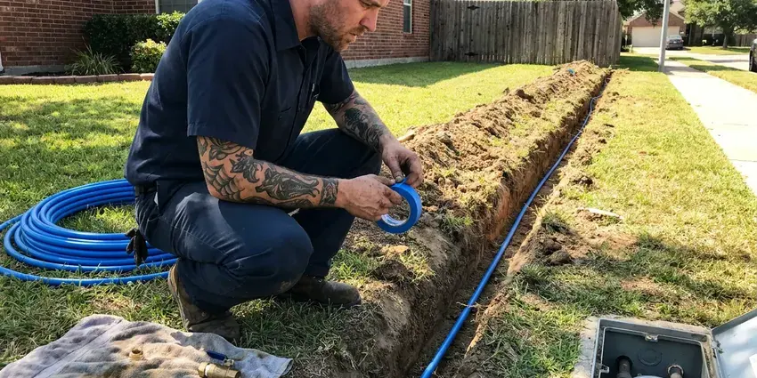

Sewer Replacement in Hollywood, FL
HDF Plumbing replaces sewer lines in Hollywood, FL, from the foundation out to the main, with new PVC or HDPE.
- Florida Licensed Plumbers
- Upfront Pricing
- Labor Warranty in Writing
- Permits and Inspections Covered

Sewer Backing Up in Hollywood, FL? Call Us.
You see the camera video before you see a price.
Long-Lasting Sewer Lines for Hollywood, FL Properties
HDF Plumbing handles sewer replacement across Florida for houses, duplexes and small commercial buildings. Pipe type matters. The pipe we remove is usually clay, cast iron or tar paper Orangeburg. Each fails in its own way, and the footage tells us which way yours is going, which shapes the method and the price.
Our expertise includes:
- Replacing collapsed and badly cracked sewer laterals
- Under-slab sewer replacement
- Camera inspection with depth locating

Additional Plumbing Replacement Services in Hollywood, FL
When repairs are no longer enough, our replacement services in Hollywood, FL deliver durable upgrades that restore full performance.




Hollywood water line replacement specialists

Customers
Why Choose HDF Plumbing for Sewer Replacement in Hollywood, FL?
A broken sewer line does more than clog. Sewage leaks into the soil around it. That wet soil can wash out the bedding, settle a walkway or attract roots from across the yard, and in bad cases it leaks toward the foundation. Replacing it stops all of that.
- Camera First, We run a camera and show you the footage before any digging.
- Quality Pipe, Solid-wall PVC and fused HDPE built to Florida code, with correct bedding.
- Camera Verified, A final camera pass confirms the new line so you know it is clean and properly graded.
Citywide Coverage
We handle houses, duplexes, small apartment buildings and storefronts across Hollywood. Every job begins with the camera. Bigger buildings bring bigger pipe and more planning, but the steps are the same, and the footage still decides the method.
Experienced Team
We train on the camera as much as the shovel. Reading sewer footage is a skill. Knowing the difference between a belly, an offset joint and a crushed section decides whether you need a spot repair or a whole new line. We get it right.
Safety-First Approach
We protect the house as much as the yard. Drop cloths go down at every door we use. Inside work at a cleanout or a toilet flange is done with the water off and the fixture capped, so nothing backs up while the line is open. We clean as we go.
Trusted Certified Hollywood Plumbing Services Professionals
At HDF Plumbing, we are proud to offer certified plumbing services throughout Hollywood, FL. Credentials matter in this trade. Every repair, install and maintenance visit follows strict safety and quality rules, and the plumbers doing the work carry recognized industry credentials.
Call Us Now PHCC Plumbing Contractor Recognition
PHCC Plumbing Contractor Recognition Better Business Bureau (BBB) Accreditation
Better Business Bureau (BBB) Accreditation Angi Certified Pro
Angi Certified Pro ISO 9001 Quality Management Certification
ISO 9001 Quality Management CertificationSewer Line Replacement Options in Hollywood, FL
Sewer Scope Inspections for Replacement in Hollywood
A sewer camera on a push cable goes in through the cleanout. The footage shows each joint, crack and root intrusion. A small transmitter called a sonde sits behind the camera head, letting us mark the depth and location from the surface, which keeps the digging small. Bring questions.

Commercial Sewer Line Replacement in Hollywood
Commercial laterals are often 6-inch pipe and carry grease or heavier flows. There is often a grease trap or interceptor to work around. We schedule the work around your hours, set up temporary bypass pumping when the building needs to stay open, and coordinate with the city on any work at the tap. Weekend starts are common.
Under-Slab Sewer Replacement in Hollywood
Sewer pipe under a slab is the hardest kind to reach. We have two ways in. We can cut and remove a strip of floor inside the house and patch it after, or dig a tunnel beneath the foundation from the yard, and the right choice depends on the length of the run, the flooring, and what sits above the pipe.
Trenchless Sewer Repair Options in Hollywood, FL
Pipe bursting needs two pits. One sits at the house, the other at the far end of the run. A cone-shaped head is pulled through the old line, breaking it outward, while fused HDPE pipe follows right behind it, which puts new pipe in the same spot without digging the yard. Driveways stay put.
Sewer Pipe Material Upgrades in Hollywood, FL
Plenty of older houses still drain through their first sewer pipe. Clay joints open up and let roots in, cast iron scales and cracks from the inside, and Orangeburg, a tar-paper pipe from the mid 1900s, slowly flattens until almost nothing passes. Replacement means PVC or HDPE.
Cast Iron Sewer Replacement in Hollywood
Cast iron sewer pipe lasts a long time, but not forever. The inside rusts and scales until the bottom of the pipe thins out and cracks. We replace it with PVC, and where cast iron remains under the house we use a shielded no-hub coupling at the transition. Clean seal.
Clay and Orangeburg Pipe Replacement in Hollywood, FL
Clay pipe came in short sections with a joint every two or three feet. Each of those joints is an opening for roots. Orangeburg is worse, since the tar-paper wall softens and deforms under the weight of the soil, and both are good candidates for bursting because they break apart easily. Fast pulls.

Trenchless Sewer Replacement Options in Hollywood, FL
Bursting and pulling replace the pipe. Lining patches the inside of the old one. We use bursting when the old line is broken or undersized, since it puts a new pipe in place instead of reinforcing the old, and lining when the pipe is still round and mostly intact. Each has its place.
Sewer Replacement Near Me in Hollywood, FL
Searching 'sewer replacement near me' usually means the line has already failed. Our camera rigs and excavation gear stay close to Hollywood. We know how Florida soils behave in a trench and where old laterals tend to run, which helps us quote quickly and dig in the right spot. Most scopes happen the same week.
Need sewer replacement near you? Tell us where the backup shows up and how often. That points us to the likely problem, and a camera in Hollywood confirms it in under an hour on most homes, which keeps the job honest.
HDF Plumbing at a Glance
- Licensed and insured plumbers serving Hollywood, FL
- 24/7 emergency service with same-day scheduling
- Upfront, flat-rate pricing before work begins
- 4.9-star rated by 739+ Florida customers
Hollywood Map
Hollywood Information
- Population
- 153,859
- Area codes
- 954/754/561
- Service area
- Hollywood and communities within 40 miles
- Nearby
- Miami Gardens, Fort Lauderdale, Davie, North Miami
A sewer line in Hollywood, FL that backs up over and over usually has a sag, a crack or roots that only replacement solves.
Expert Services
Call HDF Plumbing for reliable plumbing work done by licensed pros in Hollywood, FL.
Our Specialized Plumbing Services in Hollywood, FL
At HDF Plumbing, you get every kind of plumbing service from one company across Hollywood, FL. From leak detection to full system installs, our team works fast and charges fair prices on homes and commercial properties alike. Explore our core services below:


Our Sewer Replacement Steps in Hollywood, FL
Here is how a sewer replacement goes from first call to final camera pass.
Free Estimate
Call HDF Plumbing at (904) 925-7356. You get the camera video and a written price.
Choose the Method
Trench or trenchless, we explain both and recommend one. The footage decides it.
Prep the Site
Utilities get marked, the permit is pulled, and we lay mats to protect the lawn from equipment.
Frequently Asked Questions About Sewer Replacement in Hollywood
Most sewer replacements run $4,500 to $12,000, with length, depth and method setting the price. Trenchless pipe bursting often runs $6,000 to $15,000. Under-slab work can cost even more.
A written labor warranty from us. Manufacturers warranty the pipe itself.
Yes, in most cities. We handle the permit.
Labor is warrantied in writing. You see the warranty before signing. Materials such as the PVC pipe, fittings and couplings carry their own manufacturer coverage, and we take care of any registration. Both apply.
Almost always, yes. The permit and inspection are part of our job. Most departments want to see the new pipe in the open trench, so we time the work around their visit. You get the signed permit at the end.
We buy from major PVC makers like JM Eagle and Charlotte Pipe, plus fused HDPE from well-known suppliers. Fernco and other shielded couplings handle transitions. All of it meets ASTM standards for drain pipe.
Yes, especially on older homes. Home inspections usually skip the sewer. A scope costs little and can reveal clay pipe full of roots or an Orangeburg line about to fail, which can turn into a price negotiation or a repair credit before closing. Worth the hour.
Snaking clears a blockage. The cable cannot repair what caused the clog. If the backup returns every few months, the line usually has a root entry, a belly that collects solids, or a broken section that catches paper, and a scope shows us the cause. That decides repair or replacement.
Hear From Customers Who Hired Our Plumbing Experts

Monica A.
Our water bill nearly doubled in one month with no change in how we used water. The tech checked the meter, heard the leak under the hallway with his equipment, and opened a hole about a foot square. Fixed the same day.
Slab Leak Repair · North Miami, FL
Carlos V.
Our house still had galvanized pipe, and upstairs the shower was a trickle. The crew repiped everything in PEX over three days and patched every drywall hole before they left. The pressure difference is night and day.
Repiping · Pembroke Pines, FLDaniel K.
A pipe burst in the garage ceiling at 11 at night. Someone answered on the second ring, and the plumber was in my driveway about fifty minutes later. He shut off the main, cut out the split section, and had water back on before 2 am.
Emergency Plumbing · Davie, FL
Megan L.
Our upstairs tub drained so slowly that every shower turned into a bath. HDF Plumbing pulled a wad of hair out of the stopper and then snaked the line past the trap. Three months later it still drains fast.
Drain Cleaning · Davie, FLJessica T.
We were adding a gas range in a kitchen remodel and needed a new line run from the meter. The plumber pulled the permit, ran the pipe through the crawl space, and had it inspected and approved within the week.
Gas Line Repair · Fort Lauderdale, FL
Greg S.
I manage a small strip center with six tenants. HDF Plumbing handles our annual backflow testing and fixed a recurring clog in the shared sewer line that had been backing into the nail salon. Their reports come in clean and on time.
Commercial Plumbing · Pembroke Pines, FL